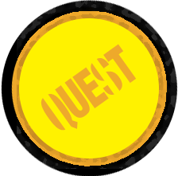
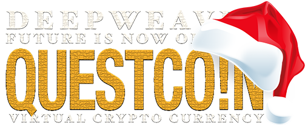
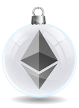

<!doctype html>
<!-- Messyd3d, sanchopanza 2018 DeepWeaver version 0.1.1 -->
<html>
   <head>
      <!-- Global Site Tag (gtag.js) - Google Analytics -->
      <script async src="https://www.googletagmanager.com/gtag/js?id=UA-131509952-1"></script>
      <script>
         window.dataLayer = window.dataLayer || [];
         function gtag(){dataLayer.push(arguments);}
         gtag('js', new Date());
         
         gtag('config', 'UA-131509952-1');
      </script>
      <meta charset="UTF-8">
      <meta http-equiv="X-UA-Compatible" content="IE=edge">
      <meta name="viewport" content="width=device-width, initial-scale=1">
      <meta 
         name="viewport" 
         content="width=device-width, initial-scale=1.0, maximum-scale=1.0, user-scalable=0" 
         >
      <title>Crypto Quest Movement</title>
      <!-- main css -->
      <link href="css/deepmobilecss.css" rel="stylesheet" type="text/css">
      <!-- fonts -->
      <link rel="stylesheet" href="https://use.typekit.net/arf5khp.css">
      <link rel="stylesheet" href="https://use.typekit.net/xyd1aol.css">
      <link rel="shortcut icon" type="image/png" href="img/favicon.png"/>
   </head>
   <body>
      <!-- Audio Content -->
      <audio id="clickSound" src="sounds/clickCoin.mp3"></audio>
      <audio id="startSound" src="sounds/PowerUp05.mp3"></audio>
      <!-- Display loader -->
      <div id="loading" class="loading">
         <br>
         <br>
         <p>...LOADING...</p>
      </div>
      <div style="display:none;" id="content" class="content">
         <div class="christmas"></div>
         <!-- Main Page -->
         <div class="container">
            <!-- NumberLock -->
            <!-- Logo and social icons -->
            <header class="header">
               <div class="logoHodler"></div>
            </header>
            <!-- Statistics / needs initial immision for live feed -->
            <div class="containerFor">
<div class="sliderBox">
	<h2>QuestCoin is exclusive for PC, you can use CLI.<br> Slide to start terminal &#10147;</h2>
	<div class="slider"> <h3> ON </h3> </div>
</div>
<div class="unlockedArea"><br><br><br><br><br>-hello world</div>
</div>
            
            <div class="coinStatistics">
               <div class="thumbnail2" >
                  <h1 class="stats" id="totalSupply">Loading..</h1>
                  <h4>TOKENS</h4>
                  <p>Tokens in circulation</p>
               </div>
               <div class="thumbnail2">
                  <h1 class="stats" id="questData">Loading..</h1>
                  <h4>QUESTS</h4>
                  <p>Solved since launch</p>
               </div>
            </div>
            <div class="mobileCli">
               <main>
                  <div class="cliScreen">
                     <section id="home">
                        <h2>DeepWeaver n.tso.SmartTerminal 0.1.1</h2>
                        <p>
                           Quest coin/Deepweaver community is a place for many questions to be asked and many voices to be heard. We welcome everyone.
                        </p>
                        <p><span>Type [command] + <kbd>return</kbd></span></p>
                        <p>Right Now QUEST COIN IS EXCLUSIVE for PC but we provide a simple Cli terminal for mobile.</p>
                     </section>
                     <section id="news">
                        <h2>Loading logs - Latest news</h2>
                        <p>Connection established</p>
                        <p>Trying to sort the news...............Failed</p>
                        <p>Not enough news to display, try again later.</p>
                        <p></p>
                     </section>
                     
                     <section id="introductionError">
                        <h2>Loading logs - Latest news</h2>
                        <p>Connection established</p>
                        <p>Trying to sort the news...............Failed</p>
                        <p>Not enough news to display, try again later.</p>
                        <p></p>
                     </section>
                    
                      <section id="usage">
                        <h2><span>&raquo;About The QUEST COIN distribution:</span></h2>
                        <p>Connecting to deeptown pool......success</p>
                           <h2>Loading logs - Latest news</h2>
                        <p>Emission of new coins:
                           1.Quest and
                           storyline
                           system - Solve puzzles,
                           advance through the
                           story - get paid!
                           2.Jobs and bounties
                           rewarding those 
                           making Deeptown
                           a better place-
                           Artists and developers get to
                           forever lock their name in
                           our blockchain culture
                           3.Anti-dump
                           developer 
                           emission -
                           Any emission is locked
                           30 days from mint.
                           There cannot be 
                           multiple emissions 
                           at the same time
                        </p>
                        <p>Usability:
                           VIRTUAL WORLD
                           MASTER-NODE
                           Create your  own VR
                           World! Rent out or sell your
                           land , you decide what
                           projects to let in and create
                           all world rules.
                           CREATE PUZZLES,
                           SPONSORED QUESTS.
                           AUGMENTED STORYLINES
                           HIRE VR ACTORS
                           DEVELOPERS
                           TESTERS, ARTISTS
                           AND MAPPERS etc.
                           TRADE QUEST ON CRYPTO EXCHANGES
                           & IN GAME BETTING
                           PARTICIPATE IN MULTIPLE DIFFERENT
                           ACTIVITIES ACROSS MANY BLOCKCHAINS
                           RENT LAND, BUILDINGS
                           CREATE AD PANELS
                           PLACE YOUR PRODUCT 
                           AT PROPERTY OR QUEST
                           CREATE ADVENTURES IN AR
                           TO RAISE BRAND AWARENESS
                           AR INTEGRATION OF YOURPERSONAL OR BUSINESS SPACE
                        </p>
                     </section>
                     
                     
                     <section id="distribution">
                        <h2><span>&raquo;About The QUEST COIN distribution:</span></h2>
                        <p>Connecting to deeptown pool......success</p>
                        <p>Our take on fair crypto distribution
                           Our distribution model provides unique experience for the crypto community. 
                           First time in history of crypto (okay maybe second) coins are distributed
                           based not on wealth but rather intellect and commitment. <br>
                           Modern-day crypto distribution: Modern-day crypto distribution may be tricky. With bitcoin distribution financial incentive was relatively vague 
                           with distribution being more about ​​​​​​​ideology.​​​​​​​ Most popular distribution types today - ICO (pre-ICO’s, pre-pre-ICO’s etc.) private sales etc are hard to
                           distribute fair. Greed joins the equation even before the project outlined it’s idea and progress. Proof-of-Work and staking and other more “classic”
                           ways of distribution require quite a financial investment - you need equipment/stake for having a chance of solving puzzles and receive rewards. 
                           Which leaves us with Airdrops, faucets and other ways of distributing ‘free’ money, although they create liquidity and can act as a promotional 
                           tool it does not necessarily build a relationship with holder. Easy to get and most likely to be forgotten about after selling it. <br>
                           Our take on it: Not everyone can invest financially so thats why we want our users to invest intellectually. 
                           we want players to build connections with won coins and set value on them from earned sense of achievement.
                           Those are the reasons why we choose quest distribution as our first source of emission. <br>
                           We currently using Ethereum blockchain as our distribution platform
                           for ​​​​​​​next reasons - proven by time, developer friendly​​​​​​​, big community. 
                           In a comparison of ​​​​​​​token to coins,​​​​​​​ many may see tokens as  
                           flawed, we see it as our strong point - we always can migrate 
                           to a public ledger that is easily retrievable.<br>
                           Possible problems:<br>
                           1) Probably biggest issue that may arise is
                           lack of transparency while solving quests.
                           And possibility of devs doing so - so we implement 
                           karma system and social rewards!
                           If you solved the quest just do a public post
                           on any big social network and receive up to x2
                           of your initial reward plus karma!
                           2) Other possibility is that we encounter a superior 
                           human intellect that can solve any puzzle we can offer.
                           In that case we will do everything in our
                           power to interact with that individual and make
                           him part of our team, thus creating superior quests 
                           for everyone else. That’s why we introduce our CREATOR
                           program where quest creators can make money and 
                           gain respected position in DeepWeaver Universes.<br>
                           The Creators:<br>
                           Good at solving or creating quest? You’ve come to the right place!
                           We want to imprint as much talent on blockchain as we can -
                           Creating quests is not only about ​​​​​​​difficulty (that too of course), 
                           but also ​​​​​​ about fun! And while we developing tools that help storytellers 
                           communicate with their audience is such ways, we encourage 
                           community creativity and work. Show us what you can do and 
                           Become our STAR Creator and forever lock your name in 
                           the history of many many virtual worlds(while getting paid).
                           LootBoxes that pay you:<br>
                           OUR SPHINX LOVES JAVA SCRIPT - Every week he (it?) chooses a light 
                           game,puzzle or project from a Community members and
                           hides a lootbox with a quest reward inside it!
                           Community members get to share their games and
                           earn rewards based on community reviews.<br>
                           Other Information on emission:<br>
                           AID system requires dev to announce mining process
                           on blockchain 86400 blocks (around 15 days) before
                           the minting itself thus protecting investors 
                           from instant dumps.
                           Our emission model is devided onto three parts in
                           our smart contract. On first stage social rewards are
                           100% from your initial reward, maximum possible
                           emission is 2m limited by 86400 AID blocks.
                           Read more in whitepaper. 
                        </p>
                     </section>
                     <section id="about">
                        <h2><span>&raquo;DeepWeaver presents:</span></h2>
                        <p>Connecting to mecci personal account......Loading information</p>
                        <p>We are creating unique entertainment platform for players and devs/creators
                           that focuses on virtual reality  augmented reality, virtual trust-less ownership 
                           and immersive storyline. 
                           During our coin emission we will be gradually introducing tools that we
                           develop to interact with users for all DeepWeaver universes to use freely.
                           <br>
                           Through WORLDS/UNIVERSES panel you can access our
                           HUB system which acts as a connection/​​​​​​​bridge mechanism 
                           between worlds. 
                           You can create your own Virtual reality by simply 
                           depositing and locking X amount of tokens with your
                           masterWorldNode address. Then follow templated 
                           prequel story and detailed rules preparation guide to 
                           connect your world to our hub system to go live on our 
                           site and attract players to your world.
                           <br>
                           We Love Open Source <br>
                           When designing a crypto project developers
                           need to take into consideration needs of all
                           participants of the market - devs, traders, miners, 
                           and esp. users and players/gamers.
                           At least we started like that.messyd3
                           <br>
                           Your own universe 
                           different blockchains - many possibilities
                           <br>To gather as much of gaming community worlds can be 
                           placed and any modern smartcontract/sidechain platforms.
                           (*if they dont scam out) With our HUB system and modern
                           atomic swaps, VR worlds can interact with each other
                           freely while being on different blockchains. <br>
                           We are very excited for our land auctions and other city
                           planning distribution events. Virtual city building is new and
                           many ​​​​​​​unknowns may arise ​​​​​​​that's​​​​​​​ why we are having multiple
                           test worlds at the beginning of the project. 
                           A real worlds city planner is onboard with us, so anyway
                           it's gonna be gud, fun and interesting to say the least.<br>
                           Price and Terra forming<br>
                           As you could’ve guessed from the name of our Token we at
                           Deepweaver take storytelling very ​​​​​​​serious. That's why every 
                           new universe created at our platform that receives our ​​​​​​​official 
                           support requires its own set of rules. Everything from species 
                           and color of the sky to the number of dimensions and 
                           interstellar travel or even time-shifting possibility. ​​​​​​​
                           Dont worry our community is always willing to help you polish 
                           your prequel story. And will populate your worlds with stories, 
                           quests, art etc if you are willing to let them and maybe reward 
                           them in some way like land or property.<br>
                           Here is just a short list of jobs almost always
                           available and needed by deepweaver.
                           Anyone can create their stories too both in
                           VR and real-world ,the limit is only your
                           imagination. The CREATORS are valued.
                           Deepweaver entertainment is working on 
                           a unique storyline as a example and 
                           we want to share our standard
                           <br>
                           Gather your -DEVELOPERS
                           -ACTORS
                           -DESIGNERS
                           -MUSICIANS
                           -GAME TESTERS
                        </p>
                     </section>
                     <section id="help">
                        <h2><span>&raquo;Help?</span></h2>
                        <p><span>Type [command] + <kbd>return</kbd></span></p>
                        <ul>
                           <li>&#39;home&#39; -- Contry roads take me home!</li>
                           <li>&#39;about&#39; -- What&#39;s DeepWeaver Platform for for</li>
                           <li>&#39;usage&#39; -- Basic emission rules and usage canvas for QuestCoin</li>
                           <li>&#39;distribution&#39; -- More deteiled information about distribution</li>
                           <li>&#39;help&#39; -- display all possible querys</li>
                        </ul>
                     </section>
                     <section id="error">
                        <p>Command not found!</p>
                        <p><span>Type &#39;help&#39; + <kbd>Enter</kbd> -- for available commands.</span></p>
                     </section>
                  </div>
                  <hr>
                  <span class="command">deep:~$<input type="text" /></span>
                  <!-- Social Section -->
               </main>
            </div>
            <div class="socialIconsHolder">
                  
                  <a href="https://bitcointalk.org/index.php?topic=5091657.msg48988875#msg48988875"></a>
                  <a href="https://etherscan.io/address/0x7e580bc06576002d43232cf0784b4df028857070"> </a>
                  
                  <a href="https://github.com/TheQuestCoin"></a>
               </div>
         </div>
         <!-- Main Container and Html Ends -->
      </div>
      <!-- Error window -->
      <div id="errorCheck" class="error" style="display: none;"></div>
      <!-- Js scripts -->
      
      
      
      <script src="https://ajax.googleapis.com/ajax/libs/jquery/2.1.3/jquery.min.js"></script>
 <script src="https://code.jquery.com/ui/1.12.1/jquery-ui.js"></script>
     <script src="https://cdnjs.cloudflare.com/ajax/libs/jqueryui-touch-punch/0.2.3/jquery.ui.touch-punch.min.js"></script>
     
      <script src="https://cdn.jsdelivr.net/gh/ethereum/web3.js@1.0.0-beta.36/dist/web3.min.js" integrity="sha256-nWBTbvxhJgjslRyuAKJHK+XcZPlCnmIAAMixz6EefVk=" crossorigin="anonymous"></script>
      <script src="js/app.js"></script>
      <script src="js/appMobile.js"></script>
<script>
		if($(window).width() > 1150){
			window.location.replace("https://deep-quest.com/");throw new Error("You are on PC!");
		}
		$(document).ready(function(){
		"use strict";
		var audio = $("#startSound")[0];
		audio.currentTime = 0;
audio.play();
$("#content").show();
		$("#loading").hide();
	});
	</script>
   </body>
</html>